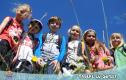
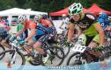
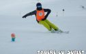
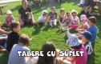
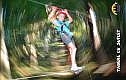
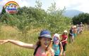

Weekend Activ este un proiect prin care promovam miscarea in natura in randul Copiilor si Adultilor. In fiecare Weekend iesim cu membrii Asociatiei, iarna si primavara la Schi si Snowboard, iar din aprilie pana in noiembrie la Drumetii, Catarat, Ture Velo, Ture de Echitatie, cu Caiacul si multe altele.

Asociatia Tabere cu Suflet sprijina Copiii sa practice sporturi in natura si sa participe la Competitii. Incepand din 2012, organizeaza Cupa Tabere cu Suflet - o competitie multidisciplinara, menita sa motiveze copiii sa practice sportul de performanta.

Scoala de Schi si SnowboardSportul este foarte important pentru noi, in Tabere cu Suflet. De aceea am creat mai multe programe prin care incurajam copiii sa faca miscare in natura, sa practice diferite sporturi si sa participe la Competitii. Unul dintre aceste este Scoala de Schi si Snowboard Tabere cu Suflet, prin care oferim, contra cost, cursuri de initiere, freeride, indoor sau de performanta, pentru copii si adulti.
 Scoala Tabere cu Suflet
Scoala Tabere cu Suflet
Scoala Tabere cu Suflet este un proiect educational Edu WeCare. A fost creat in 2014, iar prin acest proiect copiii au acces on line si off line la diferite programe bazate pe mai multe domenii de cunoastere, aflate sau nu in materia scolara.
Accesul este gratuit si, cel mai important, interactiunea se face cu Zambetul pe buze! 😀

Scoala AltfelPentru a veni in intampinarea unitatilor de invatamant (scoli, gradinite, licee etc) si pentru a sprijini programul guvernamental Scoala Altfel, am creat o serie de activitati educative si sportive, in cadru urban sau in natura, de una sau mai multe zile! Si pentru ca totul sa fie si mai placut, multe dintre aceste activitati sunt ProBono, costurile fiind sustinute prin programele WeCare:)
Teambuilding
TeamXpert este o firma de organizari evenimente si consultanta in domeniul dezvoltarii Organizatiilor care, in cadrul politicii sale de Social Responsability, in anul 2008 a demarat proiectul Tabere cu Suflet, care s-a transformat mai tarziu in Asociatia Nonprofit Tabere cu Suflet! Incepand din 2002, TeamXpert ofera programe de Training, Teambuilding, Incentive si Diagnoza.

Asociatia Tabere cu Suflet organizeaza diferite competitii si activitati pentru Copii si Adulti in Parcuri de Aventura. Impreuna cu partenerii de la TeamXpert Adventure Parks administreaza o serie de Parcuri de Aventura.

Consiliere PsihologicaDezvoltarea psihomotorie normala a Copiilor a fost inca de la inceput unul dintre obiectivele esentiale ale Asociatiei Tabere cu Suflet. De aceea am dezvoltat o serie de activitati ce se concentreaza pe dezvoltarea senzoriala, intelectuala, afectiva si sociala a Copilului, iar incepand din 2020, oferim mai multe tipuri de consiliere psihologica.
"Mens sana in corpore sano!" - Decimus Iunius Iuvenalis Mai multe citate